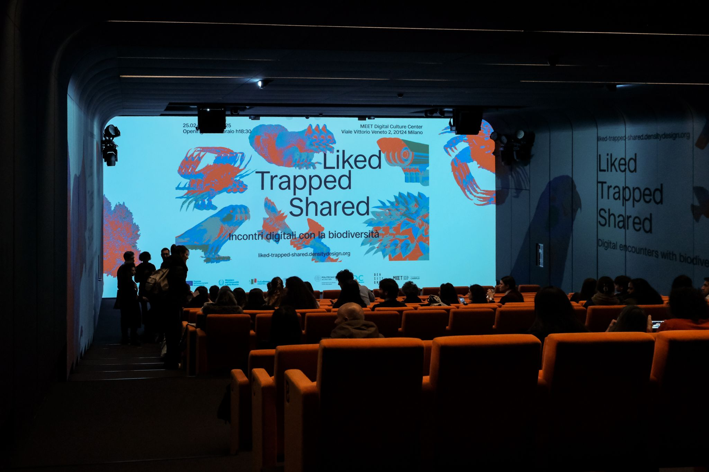
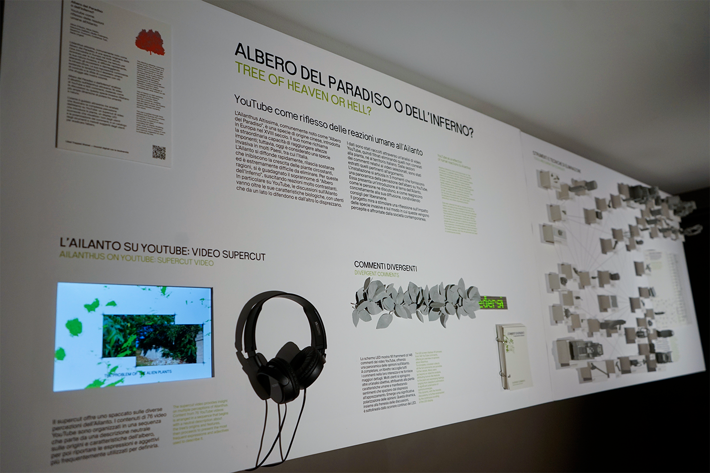
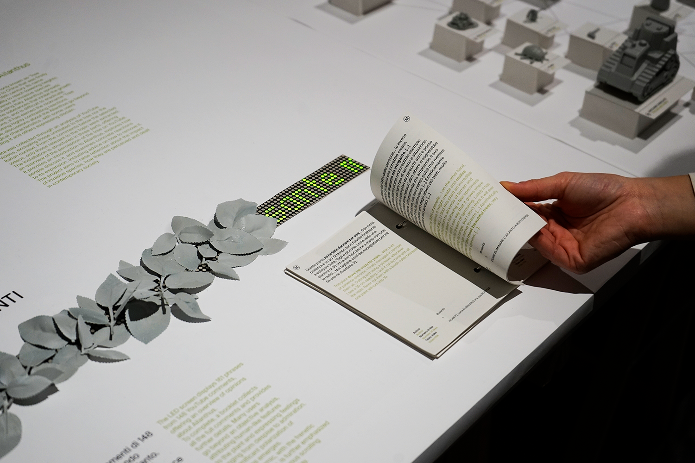
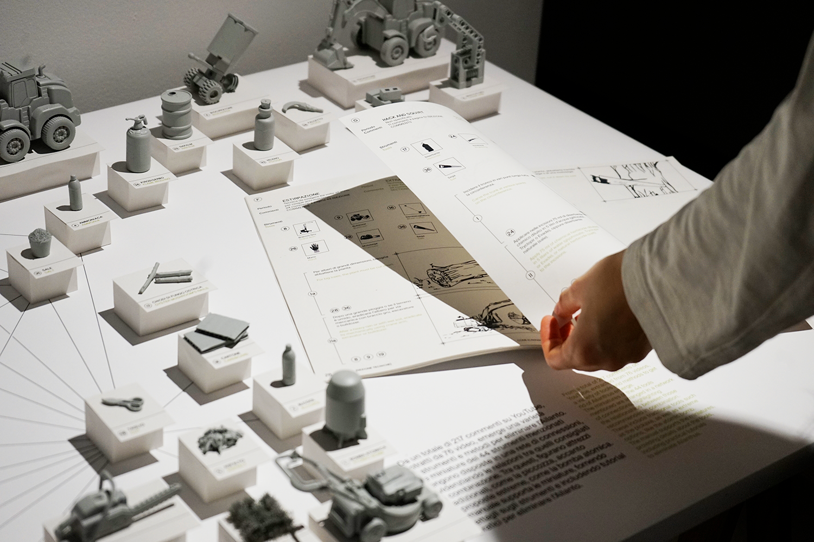
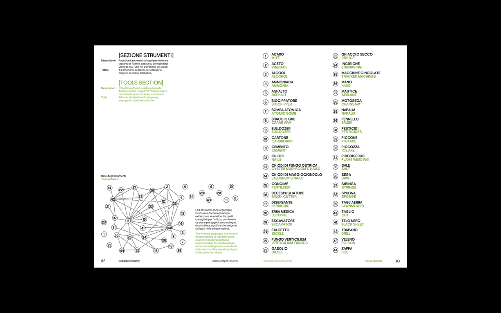
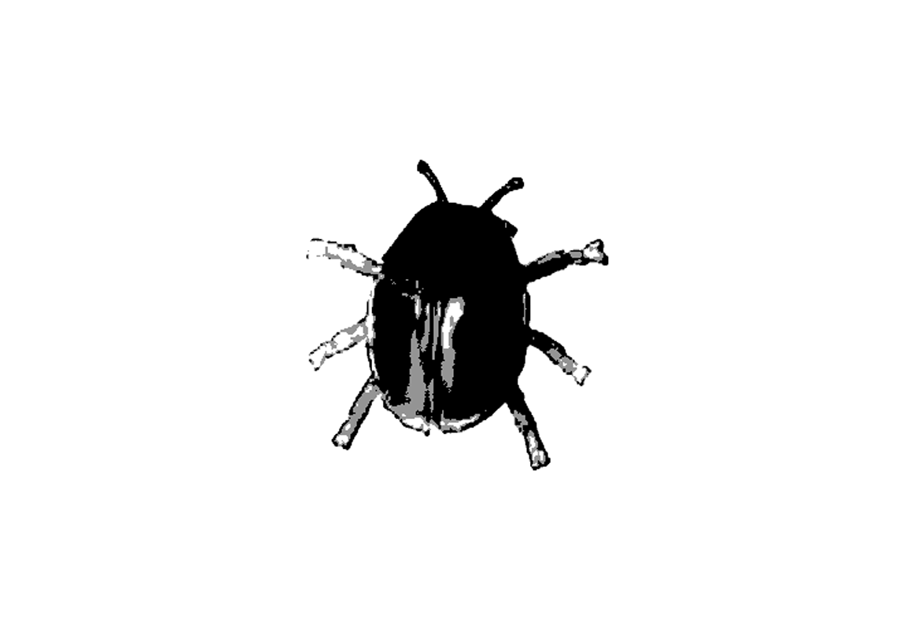
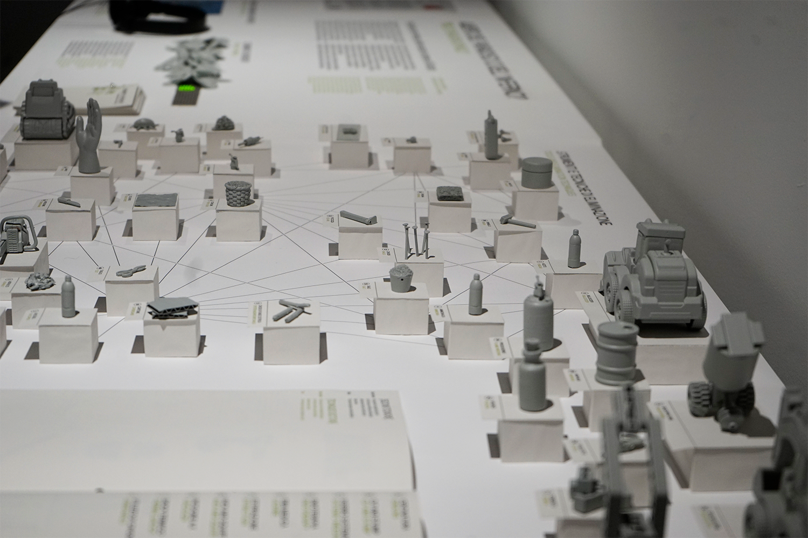

TREE OF HEAVEN OR HELL?
/ DATA VISUALIZATION
/ UNIVERSITY PROJECT
/ 2024
/ TEAM: A. D'AIUTO, A. DEZIO, E. GALLIANI
G. POLIMENO, B. TRONCONI, C. TURI
/ EXHIBITED AT
MEET DIGITAL CULTURE CENTER
"Tree of Heaven or Hell?" is a data visualization installation that explores the online debate around Ailanthus altissima through the analysis of 76 YouTube videos and 925 comments.
The project examines how discussions about this invasive species reflect broader power dynamics between humans and nature.
The installation unfolds through three artifacts: a supercut video introducing the plant, a scrolling LED display visualizing emotional tones and comment polarization, and a catalog of tools and methods proposed by users to eradicate the tree.










